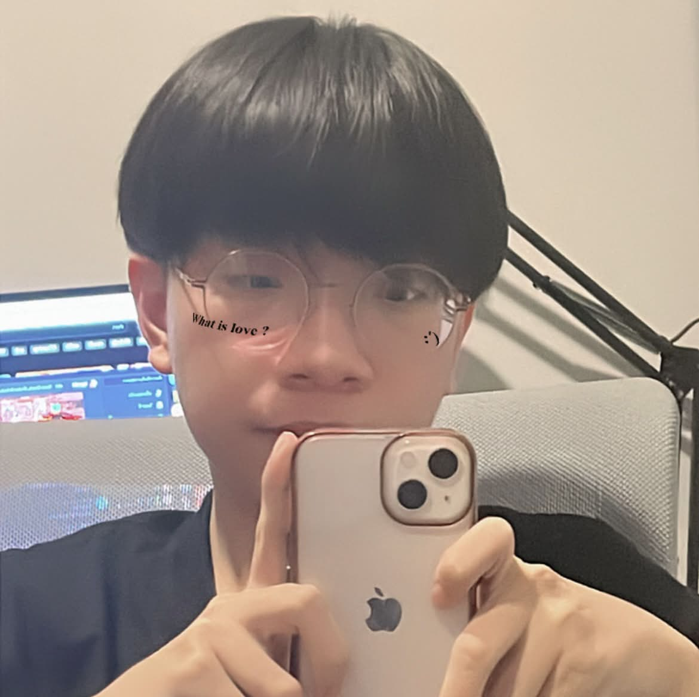

การศึกษา
Computer Engineering
ปริญญาตรี · มหาวิทยาลัยศรีปทุม
01COMPUTER ENGINEERING · DEVELOPER
ผมชอบเปลี่ยนไอเดียให้กลายเป็นซอฟต์แวร์ที่ใช้งานได้จริง ตั้งแต่ระบบหลังบ้านไปจนถึงโปรเจกต์ที่ช่วยแก้ปัญหาในชีวิตประจำวัน

นักศึกษาวิศวกรรมคอมพิวเตอร์ที่สนใจการพัฒนาซอฟต์แวร์และระบบที่ช่วยให้การทำงานดีขึ้น
การศึกษา
ปริญญาตรี · มหาวิทยาลัยศรีปทุม
01ประสบการณ์
Radius · ACE Absolute Clean Energy
02แนวทางทำงาน
ชอบทำงานเป็นทีมและแก้ปัญหาอย่างเป็นระบบ
03งานที่ได้ฝึกคิด ออกแบบ และพัฒนาระบบในโจทย์ที่หลากหลาย
พัฒนาระบบสำหรับฝ่ายทรัพยากรมนุษย์ เพื่อจัดการและเข้าถึงข้อมูลพนักงานได้สะดวกขึ้น
ร่วมพัฒนาระบบหลังบ้านให้กับเกมออนไลน์ที่ยังไม่เปิดตัว พร้อมเรียนรู้การทำงานของระบบเกม
ทดลองใช้กล่องอุปกรณ์สำหรับนับจำนวนคนภายในห้องเรียน ช่วยติดตามจำนวนผู้ใช้งานพื้นที่
เรียนรู้การตั้งค่าและใช้ Cloud Server เพื่อเผยแพร่เว็บไซต์ให้เข้าถึงได้ผ่านอินเทอร์เน็ต
พื้นฐานการเขียนโปรแกรมที่นำไปใช้กับงานและโปรเจกต์